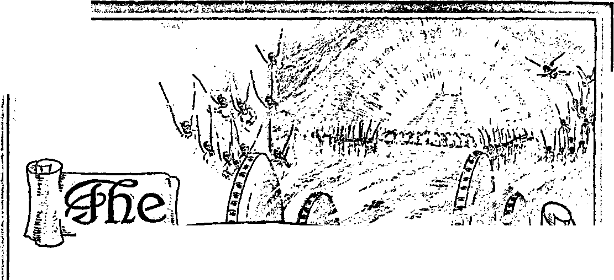

tjctjJ w '• j fc-V. rfi'
J
ffiww
y i
'W.
'G
'J'
..Iio
n ,Z«i r*rrf'r.'X^~‘<n»'^.ife7i»ni-n -VW.4 -... , frlii, ■ , ’.
Vol. LX
-Exekiel 3545.
Semimonthly No. 24
DECEMBER IS, 1939
CONTENTS
Lazarus Comforted . Introduction ...........
Fulfillment...............
The Beggar .............
Changed Conditions Gulf .........................
Corroboration .........
Prosperity .................
Letters .......................
Field Experiences . Index for 1939 ...........
371
371
372
374
375
377
378
380
382
383
384
“War of Vindication” Testimony Period 370
Yearbook for 1940 .........
“Model Study” No. 2 ..... 1940 Calendar.................
•‘Watchtower” Studies
.....370
.....370
..... 382
.....382
L.
.<!
w1
©WTB. &T5.
I mi* ijy wmMa »
Kfe-^ »m< .1 ' —. -- > — -* > - '.4ii «■* - ... « ... * » - '*2* .*♦.•- • - - " - - ' - — - -
Published Semimonthly By
WATCH TOWER BIBLE O TRACT SOCIETY 117 Adams Street • • Brooklyn, N.Y., U. S.A.
OFFICERS
J. F. Rutherford, President_______W. E. Van Amburgh, Secretary
“And all thy children shall be taught of Jehovah; and great shall be the peace of thy children.” ~ Isaiah 54:13.
THE SCRIPTURES CLEARLY TEACH
THAT JEHOVAH is the only true God, is from everlasting to everlasting, the Maker of heaven and earth and the Giver of life to his creatures; that the Logos was the beginning of his creation, and his active agent in the creation of all things; that the Logos is now the Lord Jesus Christ in glory, clothed with all power in heaven and earth, and the Chief Executive Officer of Jehovah.
THAT GOD created the earth for man, created perfect man for the earth and placed him upon it; that man willfully disobeyed God’s law and was sentenced to death; that by reason of Adam’s wrong act all men are born sinners and without the right to life.
THAT JESUS was made human, and the man Jesus suffered death in order to produce the ransom or redemptive price for obedient ones of mankind; that God raised up Jesus divine and exalted him to heaven above every creature and above every name and clothed him with all power and authority.
THAT JEHOVAH’S ORGANIZATION is a Theocracy called Zion, and that Christ Jesus is the Chief Officer thereof and is the rightful King of the world; that the anointed and faithful followers of Christ Jesus are children of Zion, members of Jehovah’s organization, and are his witnesses whose duty and privilege it is to testify to the supremacy of Jehovah, declare his purposes toward mankind as expressed in the Bible, and to bear the fruits of the kingdom before all who will hear.
THAT THE WORLD has ended, and the Lord Jesus Christ has been placed by Jehovah upon his throne of authority, has ousted Satan from heaven and is proceeding to the establishment of God’s kingdom on earth.
THAT THE RELIEF and blessings of the peoples of earth can come only by and through Jehovah’s kingdom under Christ, which has now begun; that the Lord’s next great act is the destruction of Satan’s organization and the establishment of righteousness in the earth, and that under the kingdom the people of good will that survive Armageddon shall carry out the divine mandate to “fill the earth” with a righteous race.
ITS MISSION
THIS journal is published for the purpose of enabling the people to know Jehovah God and his purposes as expressed in the Bible. It publishes Bible instruction specifically designed to aid Jehovah’s witnesses and all people of good will. It arranges systematic Bible study for its readers and the Society supplies other literature to aid in such studies. It publishes suitable material for radio broadcasting and for other means of public instruction in the Scriptures.
It adheres strictly to the Bible as authority for its utterances. It is entirely free and separate from all religion, parties, sects or other worldly organizations. It is wholly and without reservation for the kingdom of Jehovah God under Christ his beloved King. It is not dogmatic, but invites careful and critical examination of its contents in the light of the Scriptures. It does not Indulge in controversy, and its columns are not open to personalities.
Yearly Subscription Price
United States, $1.00; Canada and Miscellaneous Foreign, $1.50; Great Britain, Australasia, and South Africa, 6s. American remittances should be made by Postal or Express Money Order or by Bank Draft Canadian, British, South African and Australasian remittances should be made direct to the respective branch offices. Remittances from countries other than those mentioned may be made to the Brooklyn office, but by International Postal Money Order only.
Foreign Offices
British ....................................... 34 Craven Terrace, London, W.2, England Canadian..........................40 Irwin Avenue, Toronto 5, Ontario, Canada
Australasian.................7 Beresford Road, Stratlifield, N. S. IV., Australia
South African ................................Boston House, Cape Town, South Africa
Please address the Society in every case.
(Translations of this journal appear in several languages.)
AU sincere students of the Bible who by reason of infirmity, poverty or adversity are unable to pay the subscription price nmy have The Watchtower free upon written application to the publishers, made once each j ear, stating the reason for so requesting it. We are glad to thus aid the needy, but the written application once each year is required by the postal regulations.
Notice to Subscribers: Acknowledgment of a new or a renewal subscription will be sent only when requested. Change of address, when requested, may be expected to appear on address label within one month. A renewal blank (carrying notice of expiration! W'ill be sent with the journal one month before the subscription expires.
Entered as second-class matter at the post office at Brooklyn, N. Y., under the Act of Mai ch J, 1879.
“WAR OF VINDICATION” TESTIMONY PERIOD
December marks the “War of Vindication” Testimony Period. Like the daily march around Jericho over a complete period, the testimony for Jehovah’s name and against the foes of Theocracy continues despite the season of the year. All Theocratic publishers should offer to the public first a three-booklet combination on a 10c contribution, including Government and Peace if available. If this offer is not accepted, Government and Peace will be offered on a 5c contribution, or any contribution possible to the obtainer. This will insure a wide distribution of this most timely booklet. Portable phonographs are not to be left in idleness, but should be used from house to house to run the latest recording, and the publications announced thereon will then be offered to the listeners. The war is on, and you will now do your part therein, reporting at the end of the month’s campaign the effectiveness of your intensive activities.
YEARBOOK FOR 1940
The 1940 Yearbook of Jehovah’s witnesses presents a comprehensive report of the past year’s world-wide activities of these publishers of Jehovah's Theocracy by Christ. You will marvel at the most interesting and most successful service year yet, even with opposition increasing, nations being swallowed up by dictators, and wartime restrictions being generally applied, curtailing the Theocratic work in many countries. This report is prepared by the president of the Society. Additionally, there is a brief comment by the president on the text for the new calendar year, together with a text for each day of the year accompanied by an appropriate comment thereon as taken from recent issues of The Watchtower. The edition of the Yearbook is limited, and hence the regular contribution of 50c a copy is taken therefor. Order promptly, with remittance to cover. Each company will place their orders with the local company servant, that he may convenience this office by sending in a combination order.
“MODEL STUDY” NO. 2
This booklet is a valuable and indispensable complement to the original model study booklet. Model Study No. 2 enables anyone equipped with phonograph and lecture recordings to carry on model studies on the seven latest recorded speeches by the Society’s president, from the speech “Safety” in 1937 down to and including “Government and Peace” in 1939. The booklet also contains a Reference Index very convenient in locating the desired (Continued on page 382)
Vol. LX December 15, 1939 No. 24
"And whosoever shall exalt himself shall be abased; and he that shall humble himself shall be exalted.” —Matt. 23:12.
JEHOVAH is “the Father of mercies, and the God I of all comfort”. (2 Cor. 1:3) He it is who puts
J down the self-exalted ones and who raises up the obedient ones: “But God is the judge; he putteth down one, and setteth up another.” (Ps. 75: 7) These are fixed rules and truths, which cannot be changed. God never changes. (Mal. 3: 6) Jehovah God is representatively in his holy temple by Christ Jesus, his Executive Officer, who is judging the nations and putting down the “goats”, or self-exalted ones, and giving comfort to the obedient ones, his “other sheep”, for whom the earthly blessings proceeding from the kingdom are provided.
2 The parables uttered by Christ Jesus are prophecies; which means that they cannot be understood until fulfilled or in course of fulfillment. A parable partially fulfilled may appear so clear that the remainder of it can be well understood. The parable uttered by the Lord Jesus Christ concerning “the rich man and Lazarus” has been the subject of much discussion in times past, but no private interpretation thereof could be correct. (2 Pet. 1:20) Only when God brings to pass the physical facts in fulfillment of a prophecy can that prophecy be understood. The prophecy or parable concerning the rich man and Lazarus now appears to be at least partially fulfilled, and, further, in course of fulfillment, and it appears to be proper to now consider the same. To enable the consecrated in the study of that prophetic parable it is suggested at the outset that the principal characters therein named represent the following, to wit:
Rich Man : The “evil servant”, “the man of sin,” “the son of perdition,” the ultimate end of which composite body is destruction in Hades.
Beggar Lazarus: The people of good will, who are also pictured by Jonadab and Jonathan and others, and who seek the Lord, and which class ultimately form the “great multitude”.
The Gulf: The great chasm or division formed by reason of the final judgment rendered by Christ Jesus’ completely separating the “goats” from the “sheep” and thus disclosing, to wit, an impassable
371
condition between the organization of Satan and that of Jehovah.
Father’s House: Satan’s house or organization, to which the religionists and their supporters belong.
Five Brethren: The five together with the rich man, himself making six, picture the entire earthly organization of Satan, including those who support and form the visible part thereof.
INTRODUCTION
8 The context discloses that Jesus was addressing his disciples, and the self-righteous Pharisees were near by and heard his discourse. To his disciples Jesus emphasized the necessity of complete faithfulness in the performance of a covenant made with Jehovah. The Pharisees being in the law covenant were unfaithful to that covenant that God had made with the nation, and they had adopted and were practicing religion in the place and stead of God’s law, and in this they were hypocrites and made the law of God of none effect. Thus they turned the common people away from God. They claimed to be servants of God, but in fact were the servants of the Devil, as Jesus told them in plain phrase. (Matt. 15:1-9; John 8:42-44) Jesus, addressing his disciples, manifestly intended the Pharisees to hear his speech, and they understood that it applied to them. Jesus said: “No servant can serve two masters; for either he will hate the one, and love the other; or else he will hold to the one, and despise the other. Ye cannot serve God and mammon. And the Pharisees also, who were covetous, heard all these things; and they derided him.”—Luke 1G: 13,14.
‘ Those words of Jesus galled the Pharisees, because they understood that they were guilty of the very things about which Jesus spoke. They had been and were unfaithful to God and to their covenant. The Pharisees then occupied a position of great ease and comfort as compared to what the common people had. Their place corresponded with the position of the clergymen of the big religious organizations of the present time, which affords them ease, creature comforts, and much power amongst the people. As
372 the Pharisees, compared with the common people, were thus rich, likewise the clergymen of the big religious organizations of the present time are rich. They were ‘lovers of money”. (Rotherham; and Diaglott) In them was the “root of all evil”. (1 Tim. G: 10) Such was the condition of the Pharisees, and in this they pictured a class that occupy a similar position in the last days and which are described by the Scriptures as being covetous and entirely unfaithful. (2 Tim. 3:1,2) The Pharisees hearing the words of Jesus attempted to justify their position, and this they manifestly did that they might hold the support of the common people and continue to enjoy without interruption their condition of ease and comfort. Jesus, knowing their minds and hearing what they had to say, answered their words of derision: “And he said unto them, Ye are they which justify yourselves before men; but God knoweth your hearts; for that which is highly esteemed among men is abomination in the sight of God.”-Luke 16:15.
8 Their self-exaltation amongst men made them an abomination in the sight of God. Those religionists feared that men would not think so highly of them as they desired, and, having a desire for the approval of men and fearing to lose the same, they had been led into the snare of the Devil. (Prov. 29: 25) They had become religionists and were therefore an abomination in the sight of God.
6 The words of Jesus thus identify the Pharisees and the class that they picture as being the “rich man” mentioned in the parable. Then Jesus emphasized the importance of the kingdom and the absolute necessity on the part of those who would enter the kingdom of obeying God’s commandment. Verses 16-18 also constitute an introduction to the parable, and may be considered at some later time. The Watchtower devotes the discussion specifically to the parable that follows. Jesus was drawing a striking contrast between faithfulness and unfaithfulness to one’s covenant, and emphasizing the fact that selfexaltation results in debasement and that humble obedience results in exaltation of the creature by the Lord. In harmony with this the prophet at Psalm 75: 5-7 said: “Lift not up your horn on high; speak not with a stiff neck. For promotion cometh neither from the east, nor from the west, nor from the south: but God is the judge; he putteth down one, and setteth up another.”
’ Having stated some of the fixed rules of God’s Word, Jesus then continued his discourse to his disciples and in the presence of the Pharisees, to wit: “There was a certain rich man, which was clothed in purple and fine linen, and fared sumptuously every day.” (Luke 16:19) In support of the abstract statements made at the outset herein the Scriptural proof is offered as follows: The parable referred to had
Brooklyn, N. Y. its miniature fulfillment and application to the religionists of the Jewish people. The Jews, as a people, were in a covenant with God. They were favored above all other peoples of the earth because God had said of them: “You only have I known.” (Amos 3: 2) The chief men amongst the Jews were the clergy, particularly the Pharisees, and who were bound by the covenant to teach to the people the commandments of God and themselves to obey those commandments. Those Pharisees having set before them the privileges and blessings of the promised kingdom were in line to be truly rich, conditioned upon their faithful obedience. “The blessing of the Lord, it maketh rich.” (Prov. 10:22) Instead of obeying God’s commandments and in due time receiving the proper riches, they preferred to receive the favor and the power and the plaudits that might come to them by ruling over and dominating the people and receiving what the world might bestow upon them. They were “high-minded” and ‘trusted in uncertain riches’; concerning which the apostle afterwards spoke. (1 Tim. 6: 9,10,17) Among the favored Jews was Judas Iscariot. Jesus had chosen him as one of his disciples and had assigned Judas to a responsible place in his company. Judas was in line for great heavenly riches, but he preferred to have things visible that might enrich him amongst men, and, falling into the snare of the Devil, Judas betrayed the Lord, and Judas therefore was named by Jesus as “the son of perdition”.—John 17:12.
FULFILLMENT
8 That which came to pass upon the Jews, particularly the religious element of that people, constituted types or ensamples of larger things to come to pass, and those things concerning the Jews were “written for our admonition, upon whom the ends of the world [have] come”. (1 Cor. 10:11) The fulfillment of the prophetic parable in completeness, therefore, must take place after the enthronement of Christ Jesus, the King, and more particularly after his coming to the temple in 1918. It was then that Zion was builded up, the approved ones were brought into the temple, the “evil servant” was set on the side, and the judgment of the nations began.—Ps. 102:16; Mal. 3:1-3; Matt. 24: 48-51; 25: 31-46.
” Since the coming of Christ Jesus to the temple and the building up of Zion, the Lord has revealed to his faithful people the identity of his ideal “man”, his ‘elect servant’, and that such is Christ Jesus the Head and those who are made members of his body. Although made up of many members, such are designated “a perfect man”. (Isa. 42:1-6,19,20; Fph. 4:13; 1 Cor. 10:17; John 17:21) Those who are opposed to the Theocratic Government, and yet who falsely claim to have God for their Father, constitute “the man of sin”, “the son of perdition.” (2 Thess. 2:1-3, A.R.V.) The “man of sin”, “the son of perdition,” is a composite body made up of men who are in an implied covenant to do the will of God or in an actual covenant to do God’s will, and which “man of sin”, “son of perdition,” includes clergymen, “elective elders,” and particularly those classed by the Lord as the “evil servant”; all of whom together conspire to do injury to God’s organization, and persecute his people. (Matt. 24:24,48-50; 2 Thess. 2:9) All of such, that is to say, the composite body, are the instrument of the Devil and opposed to the kingdom of God. All of those who compose the “evil servant”, “the man of sin,” “the son of perdition,” are religionists and practice in some form what is improperly labeled “the Christian religion”. The clergy of the Roman Catholic Hierarchy take the lead amongst such religionists and are given to bombastic claims, while others likewise boast and lay claim to that which they do not have, and all such render evil toward God’s faithful people, and all are pictured by Judas, and are all in one and the same class, their end being the same.
10 The parable describes the “rich man”, but does not give his name. Probably that was due to the fact that the class pictured is made up of God’s enemies who are not worthy of a name. The description fits the class above mentioned. The Roman Catholic Hierarchy of control are rich in this world’s goods literally, and they, together with others who practice religion for temporary gain, enjoy many material riches of this world, and the plaudits and honor of men, and they have become high-minded and heady. They are, as the apostle describes, the class arising in these evil days, ‘lovers of their own selves, boasters, proud, blasphemers, covenant-breakers, despis-ers of that which is good,’ and they persecute those who proclaim the kingdom message. While claiming to serve God, they exhibit a godlike attitude but deny the power thereof. (2 Tim. 3:1-5) They draw near to God with their mouth only, and take a course of action contrary to the commandments of God; and they follow the traditions of men, which they teach and by which they make the Word of God of none effect. (Isa. 29:9-13; Matt. 15:7-9) They are hypocrites and an abomination in the sight of the Lord, and this is true also with reference to the “elective elder” class who form a part of the “evil servant”. The deceitfulness of worldly riches (that is, what this world can give) chokes them off from the truth of God’s Word. (Rom. 3:1,2; Luke 8:14) They are greedy and covetous, and love ease and the approval of men. Concerning such religionists, who exalt themselves and look toward their own ease and comfort, and who therefore are blinded to God’s purposes, God’s prophet says: ‘’Uis watchmen are blind; they are all ignorant, they are all dumb dogs, they cannot bark; sleeping, lying down, loving to slumber. Yea, they are greedy dogs which can never have enough, and they are shepherds that cannot understand; they all look to their own way, every one for his gain from his quarter. Come ye, say they, I will fetch wine, and we will fill ourselves with strong drink; and to morrow shall be as this day, and much more abundant.” —Isa. 56:10-12.
11 Exhibiting their desire for ease and showing their blindness to the truth, and having turned to worldly things, they call for the wine of the world and fill themselves with strong drink, that is, the Devil’s wine; they revel in the material things, and they have and exercise much power and influence amongst the common people. They not only deceive themselves, but deceive many about them and lead them into complete blindness.
12 Those once in the covenant with God and in line for the kingdom and who become offended and turn to lawlessness by murmuring and complaining, and who abuse their brethren and persecute them and oppose the kingdom, after having once been enlightened, are relegated to “outer darkness” and assigned specifically to the “evil servant” class. Being once in line for the kingdom, they claim God as their Father. Both they and the clergymen of the religious institutions take themselves to be “the seed” by whom civilization can succeed, and both of which address God as Father, like the Pharisees, who said, “We have Abraham for our father”; although they were in fact the sons of their father the Devil. (Luke 3:8; John 8: 39-44) Those here described collectively constitute “the man of sin”, “the son of perdition.” Such class themselves as being rich, like the Laodiceans, who say: “I am rich, and increased with goods, and have need of nothing.” (Rev. 3:17) Concerning the religionists, particularly the leaders that go to make up antitypical Babylon, it is written: “How much she hath glorified herself, and lived deliciously.”—Rev. 18:7.
13 In the parable the rich man is described as wearing purple. In mockery a purple robe was put on Jesus. (Mark 15:17-20) The modern-day “rich man” is wealthy enough to buy royal robes. The rich man in the parable is described as wearing fine linen, which symbol, when applied to the faithful of God, means the righteousness of the saints. (Rev. 19:8,14) The modern-day “rich man” is self-righteous, but does not possess any of the righteousness of the saints. The modern-day “rich man” class ignore the true riches of God: “For they being ignorant of God’s righteousness, and going about to establish their own righteousness, have not submitted themselves unto the righteousness of God.”—Rom. 10: 3.
14 The “evil servant", "the man of sin.” claims to be the favored ones of God and that they enjoy his blessings, but manifestly they are described in the Scriptures as being in the class thinking themselves to be rich and yet having nothing. “There is that maketh himself rich, yet hath nothing.” (Prov. 13:7) The present-day class fulfilling the description of the rich man have looked to self and self-interest, continue to exalt themselves, and push aside the “other sheep” of the Lord. (Ezek. 34:4, 6) They do nothing to bring comfort to those who are poor and seeking the way to life.
THE BEGGAR
” In the parable the beggar is specifically named; and when the Lord names one, that name is significant. “And there was a certain beggar named Lazarus, which was laid at his gate, full of sores.” (Luke 16:20) The name “Lazarus” means “God [is] helper”, that is, one who receives help from God. The beggar is mentioned here in striking contrast with the rich man, which latter one gets no help from God, while the beggar receives God’s help in due time. Being a beggar, Lazarus necessarily pictures a poor class. This does not necessarily mean poor in the material things of the “present evil world”, but poor in things that pertain to God’s Word of instruction, that is, poor in spirit, about which Jesus spoke when he said: “Blessed are the poor in spirit: for theirs is the kingdom of heaven.” (Matt. 5:3) Thus it is shown that those who become truly rich are the ones who receive their blessings from or through his kingdom. The words “beggar” and “poor” are from the same Greek word. “This poor man cried, and the Lord heard him, and saved him out of all his troubles.” —Ps. 34:6.
1S The beggar, therefore, pictures a class of persons realizing that all their help comes from the Lord, and who cry unto the Lord for help and receive it because of their faith in God and their obedience to God: “But I am poor and needy; yet the Lord thinketh upon me; thou art my help and my deliverer; make no tarrying, 0 my God.” (Ps. 40:17) Such constitute the class to whom the Lord says, “I will satisfy her poor with bread.” (Ps. 132:15) Such pray: “Lord, be thou my helper.” (Ps. 30:10) “Behold, God is mine helper; the Lord is with them that uphold my soul.”—Ps. 54:4.
17 The facts well known to all who are fully consecrated to the Lord exactly fit the class of persons who now earnestly seek the help of the Lord. Within the religious organizations, such as the “Catholic population” of the Roman Catholic system, are many sincere persons who have desired to know God and his provision for their salvation and blessing. They have been held in subjection to the religious organization and have remained with it because they know nothing better. They are described by the prophet of God as The men that sigh and cry for all the abominations that are done in the midst’ of the religious organizations, which organizations claim to serve God. The prophet then shows that God hears their cry and commands his witnesses, the remnant, to “go through the midst of the city”, that is, amidst the organization and the people that constitute the same, and give them an opportunity to hear the truth. The prophet says: fGo through the midst of Jerusalem and set a mark on the foreheads of those that cry and sigh for the abominations done therein.’ (Ezek. 9:4) Since the year 1922 Jehovah’s witnesses have been doing that very thing in obedience to God's commandment.
18 Note now how the description of the beggar further fits the Jonadab or Jonathan class, the people of good will. In the parable the statement is made that the beggar was laid at the gate of the rich man and was full of sores. Because of receiving no lifesustaining spiritual food the “Catholic population”, who desire the truth and who have not received it, have become sick and diseased, and the clergy not only have neglected to give them spiritual sustenance but have deliberately kept the truth of God’s Word away from those honestly seeking for the same. By his prophet God says of these unfaithful ones who claim to serve him: “The diseased have ye not strengthened, neither have ye healed that which was sick, neither have ye bound up that which was broken, neither have ye brought again that which was driven away, neither have ye sought that which was lost; but with force and with cruelty have ye ruled them.” (Ezek. 34:4) These words exactly describe how the honest and sincere persons under the religious organizations have been ill-treated by the self-exalted ones. The persons of good will, therefore, have long been sick, full of sores, and in a dying condition, and are still in that condition so far as religious organizations are concerned. The religious leaders have claimed that they have the life-sustaining Word of God, but insist that they alone can dispense that Word to the people, and they discourage the people in finding out anything about God’s Word. The persons of good will pictured by Lazarus have desired to be fed even by the crumbs of truth which fall from the rich man’s table; that is to say, they have eagerly looked for the smallest particles of truth, that they might feed thereupon, and have found little or nothing: “And desiring to be fed with the crumbs which fell from the rich man’s table; moreover the dogs came and licked his sores.” —Luke 16: 21.
18 It is certain that the rich clergy and others who claim to be rich as hereinbefore described, to wit, the “evil servant”, have not ministered to and do not minister to or feed the poor, and the parable shows that only the dogs lick the poor man’s sores. It may well be said that the dogs picture the worldly reformers who have tried to alleviate the sufferings of the people and give them some comfort but who have been unable to do so because they have only visionary schemes. No doubt many reformers, Socialists, and many like organizations, have desired to do good to the people and have put forth their schemes, and, being regarded by the higher-ups as outcasts, like dogs, have been the only ones who have ministered unto the people of good will until the Lord’s due time to give the modern-day “poor man” help.
20 The “evil servant” class show no desire to help the poor of good will. These desire to be fed, and both the “evil servant” class and the clergy have held aloof from them and failed or refused to bring any comfort to those seeking the way to life. Those of the “evil servant” class have salved their own conscience by saying that “restitution blessings will be given to those people during the Millennial reign, therefore there is no need for us now to give any attention to them; we are concerned about spiritual things and preparing our characters that we may go to heaven, and then we will minister to the needs of the world”.
21 Rahab the harlot pictured the same class of people of good will, and she was ostracized by the religionists and she was required to live on the outskirts of the city. (Josh. 2:1,15) The self-exalted ones of Rahab’s day did nothing for the poor, just as the religionists of the present day have done nothing for the comfort of the people of good will toward God. The self-exalted and self-righteous ones, having their attention called to the “beggar” class, have exhibited their own self-righteousness and prayed hypocritically, and, like the Pharisee, have said: “I thank [God] that I am not as other men are.” (Luke 18:11) The rich man did not feed Lazarus, but pushed him aside and gave him no attention; and in the fulfillment of the parable the religionists do not feed the people of good will toward God, but try to starve them. About the only crumbs that have fallen from the rich man’s table of modern times have been “purgatory for pay” and “restitution for the future”.
22 God’s due time came for the fulfillment of the parable with reference to the poor man, and then he revealed to his faithful people that the “great multitude” is an earthly class, which class will live on the earth forever. (Rev. 7: 9-17) That message from the Lord was delivered to his people in 1935, and brought unbounded joy to those people of good will who heard it. Likewise the faithful remnant rejoiced. Did the “elective elder” class take part in expressing their joy in carrying the message of good news to the peoples of good will? No; far from it. On the contrary, those of the self-righteous “elective elder”, “evil servant” class then said, and continue to say: “Where is there any evidence that the great multitude will bo an earthly class? Where is the proof that the great multitude is now being gathered? We see no great multitude.”
23 Such of the “evil servant” class have held and still hold to the doctrine that the “great multitude” is a class secondary in faith, into which the halfway faithful may land if they are not able to reach heavenly glory. They have wanted that class to exist as a place for themselves in which to light in case they came short. Being selfish, they are ignorant as to the truth; and instead of helping to feed those who are of good will, the “evil servant” class has been diligent to hinder the work of the Lord and his faithful witnesses in carrying the message of the kingdom to those who will form the “great multitude”.
2‘ Then when the Lord revealed to his people that the “great multitude” will not only be an earthly class but be privileged to fulfill the divine mandate to “multiply and fill the earth”, the “elective elder” class vigorously opposed the same and disputed and continue to deny that comforting truth, still holding to the unscriptural doctrine that the “great multitude” will be a secondary spiritual class, and to the “restitution” doctrine for imperfect man, who will be “restored during the reign of Christ”. It is therefore seen from the Scriptures and the facts that the description of the rich man in the parable, who was self-righteous, well describes the self-righteous religionists, the clergy and the “evil servant” class, all of whom are against God’s kingdom and who are diligent in their efforts to keep the people of good will in ignorance of the truth that brings comfort to those who love righteousness.
CHANGED CONDITIONS
23 Death means the absence of life or right to life. By reason of sin all men have been born sinners, and therefore without the right to life. (Rom. 5:12; Ps. 51: 5) The entire human race, therefore, is found in the condition of being “dead in trespasses and sins”, and hence without the right to life. (Eph. 2:1) God made provision that those who would believe on the Lord Jesus Christ might have life by and through Christ Jesus. (John 3:16; Rom. 6:23) Jehovah made a covenant with the nation of Israel and gave that nation his law in order that the Israelites might be held in line of righteousness until the coming of Christ Jesus. (Gal. 3:19) When Christ Jesus came, those who did believe on and accept him as the Messiah were given the right to life. The Jews were bound to keep that law covenant, but because of inherited imperfections they could not keep the letter of it; but by their unselfish devotion to God and his commandment they could keep the spirit of that law. A few faithful Jews did that very thing, and those who did accept Christ 'became dead to the law by the body of Christ’. (Rom. 7:4) Those who knew nothing of God’s provision to give men life could not accept that provision, and, as stated in the Scriptures, all such “were dead in trespasses and sins”. (Eph. 2:1; Col. 2:13) Those who did believe on Christ and devote themselves to God and his King were 'delivered from the power of darkness and translated into the kingdom’. (Col. 1:13) It is therefore seen that death means a radical change, which makes an end to a former condition and brings about another and different condition. The word “death”, therefore, properly applies to those who have a temporary existence, but without the right to life, and also to those who are out of existence and are buried.
28 In the miniature fulfillment of the prophetic parable the poor man stood for a class of common people who have been kept in ignorance of God’s provision for their salvation and who have been pushed aside by the religious leaders, which leaders have counted themselves rich. The common people heard Jesus gladly, but the religious leaders were always trying to turn the people away from Christ. Lazarus was in a miserable condition; and therefore the people of good will have been in a miserable condition; but in due time, as the parable teaches, a changed condition comes about: “And it came to pass, that the beggar died, and was carried by the angels into Abraham’s bosom; the rich man also died) and was buried.”—Luke 16: 22.
” The changed condition in the fulfillment of the prophetic parable brings the Lazarus class “into Abraham’s bosom”. Abraham stands for or pictures Jehovah God, and his bosom therefore represents God’s favor toward the beggar class. The Scriptures clearly disclose that Jehovah God is called the Greater Abraham. (Rom. 4:16,17, margin) The “other sheep” of the Lord were alienated from God and were kept in ignorance of God’s provision for them by reason of the influence of the religionists, and in this condition they remain until after the coming of Christ to the temple and his beginning the work of gathering to himself his “other sheep”. (John 10:16) At the temple the Lord Jesus is accompanied by the host of “holy angels”, who serve him and obey his commandments. (Matt. 25: 31) At that temple judgment the approved ones, the “remnant”, are brought into the temple, commissioned and sent forth as the witnesses of Jehovah and to carry the message of truth to the hungry ones, including the “great multitude”. It is manifest that the Lord at the temple uses his angels to get this message to his servants on earth, and thus he uses the angels to carry out his purpose in gathering his “other sheep” to himself. When the Lord brought this message to the people of good will, otherwise called the “Jonathan” or "Jonadab” class, those who have heard and accepted the message and devoted themselves to Jehovah and his kingdom have a changed condition and are truly carried away into the favor of Jehovah, the Greater Abraham, that is to say, into the bosom of the Lord, where they find rest and peace.
28 Then says the prophetic parable: “The rich man also died, and was buried; and in hell he lift up his eyes, being in torments, and seeth Abraham afar off, and Lazarus in his bosom.” (Luke 16:22,23) There is nothing to indicate that the rich man ever gets out of the condition in which he then finds himself. Being dead and buried means that he had ceased to have any right to life. He still had a temporary existence, otherwise he could not have lifted up his eyes, because “the dead know not any thing”. (Eccl. 9:5,10) The rich man at this point, therefore, pictures a class of persons who have received their final judgment from the Lord. For three and one-half years Jesus confined his teaching to the Jews, and hence the Jewish clergy were especially favored, because they ‘sat in Moses’ seat’. Instead of accepting that favor they spurned it and opposed the Lord. Likewise, since the days of the apostles the clergy have had the Scriptures and claimed to know that which told of God’s gracious provision for mankind. Since the coming of the Lord Jesus and his enthronement the clergy and the “evil servant” class have enjoyed the splendid opportunity of hearing and learning the truth and obeying it. Being self-exalted and self-important, they have spurned God’s goodness, and therefore a complete change of condition in regard to them has come about. They have lost all opportunity to live and have spiritually died and gone to Hades, although still having a measure of life or existence.
20 The prophetic parable clearly refers in symbolic language to the condition of the two classes. The changed condition comes to both classes, and both awaken to a realization thereof. The “Lazarus” class, the people of good will, awaken to the fact that life is set before them, and, accepting this, they awaken to peace, joy, and to life everlasting. The “rich man” class awaken to the fact that they are rejected by the Lord, and they hear his judgment pronounced; therefore they awaken to lasting contempt. The Lazarus class “God helps”, and the rich man class God declines to further favor. The rich man class abide in death, ‘although he liveth.’ (Eph. 2:5; 1 Tim. 5:6) Because of their faith and obedience the Lazarus class, the people of good will, become far removed from their former condition and find rest under the organization of the Lord. Therefore with peace, joy and comfort the Father of mercies and God of all comfort comforts them.
•• The time comes when the rich man class cries for help. “And he cried and said, Father Abraham, have mercy on me, and send Lazarus, that he may dip the tip of his finger in water, and cool my tongue; for I am tormented in this flame.”—Luke 16: 24.
This part of the parable is today in course of fulfillment. The truth now being proclaimed concerning the religionists and the “great multitude” is like a fire of torment to the religionists and to the “evil servant” class. They begin to realize that the message proclaimed is true and shows them to be in a deplorable condition. They begin to murmur and complain concerning the Lord’s people and to persecute both the remnant and the Jonadab class. Jude describes them in this language: “But these speak evil of those things which they know not; but what they know naturally, as brute beasts, in those things they corrupt themselves. Woe unto them! for they have gone in the way of Cain, and ran greedily after the error of Balaam for reward, and perished in the gainsaying of Co're. These are spots in your feasts of charity, when they feast with you, feeding themselves without fear; clouds they are without water, carried about of winds; trees whose fruit withereth, without fruit, twice dead, plucked up by the roots.”—Jude 10-12.
12 Thus it is seen that the modern-day “rich man” class is described as covetous, greedy, without fruits, “twice dead, plucked up by the roots”; which means their end. The parable shows that they come to a full realization of the fact that they have sinned against light and therefore can receive no more favor from the Lord. (Luke 12:10) The facts show that they are in the class named “the son of perdition” because willfully defaming God’s name; they have trodden under foot the Son of God, and counted the blood of the covenant an unholy thing.-Heb. 10:29-31.
83 The Greater Abraham answers the cry of the rich man class: “But Abraham said, Son, remember that thou in thy lifetime receivedst thy good things, and likewise Lazarus evil things; but now he is comforted, and thou art tormented.”—Luke 16: 25.
84 Those of the “great multitude”, whom God has recently helped and now comforts, are greatly rejoicing. For many years the Lazarus class received that which was hurtful to them, but now having come into God’s favor they enjoy great comfort and peace. The message which comforts the “great multitude” is at the same time a message of despair to the “evil servant”, “the man of sin,” “the son Of perdition.” The present-day facts show a fulfillment of this part of the parable, and particularly the fact that the rich man class is tormented by the kingdom message, while those who are for God’s kingdom greatly rejoice. The “evil servant” class and others of the “man of sin” were once in line for the kingdom and, had they shown faith and obedience, would have received kingdom blessing. Turning to lawlessness, the result to them is stated by the Lord Jesus as follows: “The Son of man shall send forth his angels, and they shall gather out of his kingdom all things that offend, and them which do iniquity; and shall cast them into a furnace of fire; there shall be wailing and gnashing of teeth.” (Matt. 13:41,42) That evil class now is wailing because of their condition, and gnashing their teeth against both the remnant and the “great multitude”.
GULF
88 The parable speaker addresses the wicked class even as Joshua spoke to Achan, who pictured that same money-loving, wicked class (Josh. 7:19); and hence he calls him “son”. Then the Lord adds: “And beside all this, between us and you there is a great gulf fixed; so that they which would pass from hence to you cannot; neither can they pass to us, that would come from thence.”—Luke 16: 26.
88 What is that great gulf? Manifestly it is the chasm which cannot be passed over, resulting from the final judgment Christ Jesus is now pronouncing and in which he separates the “goats”, the wicked ones, from the faithful “sheep”. (Matt. 25:31-46) This separation forms a great and impassable gulf between the two classes. To the “goat” class the Lord says: “Depart from me, ye cursed, into everlasting fire [destruction] prepared for the devil and his angels.” With that final judgment uttered the “goat” class can never come to the Lord’s blessing, and the “other sheep”, the ones faithful to the Lord, can never go over that gulf without losing life. Hence it is impossible for either of the two classes to again be brought together. Jehovah makes it clearly to appear from the prophecy of Ezekiel that before his final judgment is executed against the wicked ones that class know that Jehovah is the Supreme One and, further, that the wicked have lost all favor with him. (Ezek. 35:9,15) The “evil servant”, “the man of sin,” the modern “rich man” class, is then pictured as crying unto the Lord that he would send Lazarus to his father’s house to warn his five brethren: “Then he said, I pray thee therefore, father, that thou wouldest send him to my father’s house: for I have five brethren; that he may testify unto them, lest they also come into this place of torment.”—Luke 16:27,28.
37 The father of the “rich man” class is the Devil, as Jesus plainly informed them. (John 8:44) The five brethren of the rich man therefore, together with the “rich man” class, make six and picture all of Satan’s house or organization. To the rich man’s request the Lord gives reply: “Abraham saith unto him, They have Moses and the prophets; let them hear them.” (Vs. 29) In other words, these have had the Scriptures, to which they might have given heed and found comfort. They had an opportunity to hear the message of God, as set forth by his faithful prophet Moses and others of the prophets. They have the words spoken by Jesus and the apostles. Instead of following God’s law they have preferred religion and they have urged upon the people, and today urge upon them, “more religion,” which God declares is a snare. When Jehovah’s witnesses approach them with God’s message of truth today they persecute those witnesses. When the witnesses of the Lord attempt to warn them in the language of the Scriptures concerning the snare of the Devil, they not only refuse the message, but ill-treat Jehovah’s witnesses because they speak of God’s Word. When the modern-day “rich man” class cry to Jehovah that, if he would send some who have been dead to their brethren, they might repent (vs. 30) the Lord replies: “If they hear not Moses and the prophets, neither will they be persuaded, though one rose from the dead.” (Vs. 31) Even if the faithful witnesses of old shall shortly return from the dead and bear testimony before the religionists and their followers, the politicians and the financiers, they will not hear and obey the truth. The judgment of Christ Jesus at the temple upon the nations is final.
88 The great gulf or chasm between the “goats” and the “sheep” can never be changed, because God does not change. A striking illustration of this is found in the divine record concerning Judas and Esau. (Matt. 27: 3-5; Heb. 12:17) Concerning those who have preferred Satan’s house and who have opposed The Theocracy it is written: “Let favour be shewed to the wicked, yet will he not learn righteousness ; in the land of uprightness will he deal unjustly, and will not behold the majesty of the Lord. Lord, when thy hand is lifted up, they will not see; but they shall see, and be ashamed for their envy at the people; yea, the fire of thine enemies shall devour them. They are dead, they shall not live; they are deceased, they shall not rise; therefore hast thou visited and destroyed them, and made all their memory to perish.”—Isa. 26:10,11,14.
88 One of the pet theories today of the “evil servant” class is the false doctrine of universal salvation, including the Devil himself. They have defamed God’s name by teaching that one can willfully and deliberately oppose God’s kingdom and still be saved. This parable showing the final end of the opposers completely explodes that false theory.
CORROBORATION
40 AU of God’s Word is harmonious because all of his ways are right. Other scriptures which corroborate the foregoing statements concerning the parable of the rich man and Lazarus are here mentioned. The twelfth chapter of Daniel, particularly verses one and three, clearly refers to the “day of Jehovah”, which began with the enthronement of Christ Jesus the King in 1914. Within that day the following text applies: “And many of them that sleep in the dust of the earth shall awake, some to everlasting life, and some to shame and everlasting contempt.”— Dan. 12:2.
41 Clearly this text could not refer to the general resurrection of the dead during the reign of Christ. The wicked shall never have a resurrection. (Ps. 145: 20) The offspring of the “great multitude” that turn to wickedness shall be annihilated. (Isa. 66: 24) Neither could Daniel 12:2 refer to the awakening of the wicked at the end of the thousand-year reign.
42 This prophecy of Daniel 12:2 clearly refers to the awakening of two classes, one class to a realization of their deplorable condition, which must be realized by them prior to Armageddon, and the other class awakened to an opportunity of life everlasting. This prophecy describes both classes as “them that sleep in the dust of the earth [and] shall awake”. Figuratively “the dust of the earth” represents that which is low, mean and worthless, the dry and discredited things of the earth, that is, a condition of ignorance and inactivity and darkness. Men who are wicked sleep in the light and awake when night comes. The apostle declares that those who are the faithful followers of Christ Jesus are not of this class. (1 Thess. 5:3,4) The beginning of “the day of Jehovah” and “the day of Christ” finds the condition in the world exactly as described by the Lord’s prophet, when “darkness shall cover the earth, and gross darkness the people”. (Isa. 60: 2) With the appearing of Christ Jesus at the temple greater light came upon God’s Word, and those who desire righteousness and life then sought diligently to get a better understanding of his Word, much of which was sealed to that time. Then ‘many run to and fro, and knowledge is increased’.—Dan. 12: 4.
43 Light makes manifes4 the things that are right and that which is wrong: “But all things that are reproved are made manifest by the light; for whatsoever doth make manifest is light.” (Eph. 5:13) Those who had once agreed to do the will of God but who had become negligent and hence asleep were dead to their privileges; and to them this message is addressed : “Wherefore he saith, Awake thou that sleepest, and arise from the dead, and Christ shall give thee light. See then that ye walk circumspectly, not as fools, but as wise, redeeming the time, because the days are evil.” (Eph. 5:14-16) Likewise the man who desires truth and righteousness and who is in great need of instruction finds himself in a bad condition and prays: “My soul cleaveth unto the dust; quicken thou me according to thy word.”—Ps. 119:25.
44 One who begins to see the light joyfully cries: “As for me, I will behold thy face in righteousness; I shall be satisfied, when I awake, with thy likeness.” (Ps. 17:15) As the light of truth has caused those who love righteousness to awake from their condition of sleep in the low things of the earth, so likewise the religionists are brought face to face with light that reveals to them their deplorable condition. The “foolish virgin” class awake too late and find themselves in a deplorable condition. (Matt. 25:5-8,11,12) The religious leaders and the principal of their flocks have for long slept in the dust of the earth. To them the Lord says: “Awake, ye drunkards, and weep; and howl, all ye drinkers of wine, because of the new wine; for it is cut off from your mouth.”—Joel 1: 5.
45 They do awake and, awakening to their miserable condition, see disaster staring them in the face. (See The Watchtower June 15,1939, page 185.) Both classes thus awakening from the dust of the earth are described in Daniel 12:2. This awakening takes place in the day of Jehovah and before Armageddon. The “other sheep” class, composing the “great multitude”, awake to everlasting life, and the “goat” class awake to everlasting contempt. The prophecy, therefore, applies to the present time and includes the antitypical “rich man” and the antitypical Lazarus class. It is in the same day of the Lord that “they that be wise shall shine as the brightness of the firmament; and they that turn many to righteousness as the stars for ever and ever”. (Vs. 3) We are in the day of awakening, and the fulfillment of this part of Daniel’s prophecy is progressing.
“Abraham pictured Jehovah God; Isaac was a type of Christ Jesus, the beloved Son of God; Jacob, a type or picture of The Christ, Head and body. (Col. 1:18) Thus was The Theocracy pictured. (See The Watchtower December 1, 1939.) The Jonathan class, which shall form the “great multitude”, now see and appreciate The Theocracy, and such are now coming to God’s kingdom, and they are coming from all parts of the earth, and they find refuge, protection, rest and comfort under the organization of Jehovah. In the light now given to God’s people by his Word note these words of Jesus spoken concerning a lowly, humble man who showed his faith in the Lord and who sought help from the Lord: “When Jesus heard it, he marvelled, and said to them that followed, Verily I say unto you, I have not found so great faith, no, not in Israel.” (Matt. 8:10) The faith exhibited today by the Jonathan class (who are not spiritual Israelites) often exceeds the faith and zeal manifested by those who claim to be Israelites after the spirit. Speaking of this faith of the centurion, Jesus then, addressing those who stood by, said: “And I say unto you, That many shall come from the east and west, and shall sit down with Abraham, and Isaac, and Jacob, in the kingdom of heaven.
But the children of the kingdom shall be cast out into outer darkness; there shall be weeping and gnashing of teeth.”—Matt. 8:11,12.
4T Today the information is being brought directly to the clergy and to the “evil servant” class who claim to be Israelites after the spirit and many of whom no doubt were once in line for the kingdom, and these are being told that the kingdom is at hand and that all who support The Theocracy shall find life, and those who oppose it shall be destroyed. The “other sheep” of the Lord, hearing this message, are coming from all quarters of the earth and from all walks of life amongst the common people. These “other sheep” now see and appreciate the Theocratic Government. They see that Abraham pictured the Greater Abraham, Jehovah God; that Isaac pictured Christ Jesus, the beloved Son of God; that Jacob pictured The Christ, Head and body; and that such constitutes the Theocratic Government. Seeing this by faith, they hasten to put themselves under The Theocracy, and thus they “sit down with Abraham, and Isaac, and Jacob”, composing the heavenly Theocracy; and by the words “sit down” it is shown that they have found rest, protection, ease and comfort and know what God has in reservation for them that love and serve him. At the same time those once in line for the kingdom come to a realization that they are cast out and are in “outer darkness”, and hence they indulge in howling and wicked persecution of God’s people. (Matt. 8:12) Other scriptures show that Abraham, Isaac and Jacob resurrected will be on earth immediately preceding Armageddon, and the people of good will forming the “great multitude” will be literally associated with them; and therefore this scripture (Matt. 8:11) is subject to this double meaning.
48 In the past “the man of sin”, the antitypical “rich man”, has had many favors and advantages from the Lord, but, having the selfish desire to be rich and to enjoy power and influence amongst men and approval of men and fearing that they would not get such, they have turned easy victims to the snare of the Devil. “But they that will be rich fall into temptation, and a snare, and into many foolish and hurtful lusts, which drown men in destruction and perdition. For the love of money is the root of all evil; which while some coveted after, they have erred from the faith, and pierced themselves through with many sorrows.”—1 Tim. 6: 9,10.
48 The “evil servant” class, “the man of sin,” trust their own riches to take them into the kingdom. To that class Jesus said: “When once the master of the house is risen up, and hath shut to the door, and ye begin to stand without, and to knock at the door, saying, Lord, Lord, open unto us; and he shall answer and say unto you, I know you not whence ye are; then shall ye begin to say, We have eaten and drunk in thy presence, and thou hast taught in our streets. But he shall say, I tell you, I know you not whence ye are; depart from me, all ye workers of iniquity. There shall be weeping and gnashing of teeth, when ye shall see Abraham, and Isaac, and Jacob, and all the prophets, in the kingdom of God, and you yourselves thrust out.”—Luke 13: 25-28.
80 Within that same time the words of Jesus apply (vs. 29): “And they [the Lazarus class, who will form the great multitude] shall come from the east, and from the west, and from the north, and from the south, and shall sit down [find rest and peace] in the kingdom of God.” Other scriptures show that the "great multitude” come from all quarters of the earth and that they give praise to Jehovah God, evidencing their rest and joy: “Therefore are they before the throne of God, and serve him day and night in his temple; and he that sitteth on the throne shall dwell among them. They shall hunger no more, neither thirst any more; neither shall the sun light on them, nor any heat. For the Lamb, which is in the midst of the throne, shall feed them, and shall lead them unto living fountains of waters; and God shall wipe away all tears from their eyes.”—Rev. 7:15-17.
81 The honest, sincere ones who desire righteousness, and who seek the Lord, are now finding rest and comfort. The Father of mercies, the God of all comfort, now brings consolation to them, affording to them the privilege of knowing him and of joining with others in carrying the message concerning God’s kingdom to the world in distress. The Lazarus class now receive the “good things” from the hand of the Lord.
82 At the twenty-third chapter of Matthew the Lord Jesus describes again the same class pictured by the rich man, and with the most scathing words ever spoken he denounces that class and says to them: “Wherefore ye be witnesses unto yourselves, that ye are the children of them which killed the prophets. Fill ye up then the measure of your fathers. Ye serpents, ye generation of vipers! how can ye escape the damnation of hell ?”—Matt. 23:31-33.
88 The religious element, including the “elective elder” class, have for long exalted themselves. The poor in spirit, humble-minded, and meek, have tried to learn, but, being influenced by the religionists, they have been kept in ignorance and pushed aside; but now the Lord is causing his message to be carried to them and the words spoken by Jesus to his disciples are now being fulfilled, to wit: “And whosoever shall exalt himself shall be abased; and he that shall humble himself shall be exalted.”—Matt. 23:12.
84 The Lazarus class are now coming into their own. By faith they see the great blessings that God has in store for them. With burning zeal they go forth to the service proclaiming The Theocracy. Their joy is ever increasing, and they delight to have a part in the vindication of the name of the Greater Abraham and to serve his Beloved, the King of the Theocratic Government.
88 If you are of good will toward the Lord and hearing his gracious message concerning your salvation, then be exceedingly diligent to give your full and unstinted allegiance and support to'The Theocracy and join in sounding the praises of Jehovah by declaring his name and his kingdom to others as you have opportunity. All who will now retain the favor of the Most High must thus give their whole devotion and support to Jehovah and to his King.
THE faithful “remnant” of witnesses are Jehovah’s people taken out from the nations “for his name”. (Acts 15:14) They have a work to do and must use the Lord’s message and their divine working equipment in the Lord’s service. Addressing his remnant, who have been delivered from captivity in “Babylon”, the Devil’s organization, and been set to work at his temple, Jehovah says by the mouth of his prophet Zechariah (8:9): “Thus saith the Lord of hosts, Let your hands be strong, ye that hear in these days these words by the mouth of the prophets, which were in the day that the foundation of the house of the Lord of hosts was laid, that the temple might be built.” It is those who hear and appreciate the prophecies which Jehovah has opened and made plain to his people in this day that must be strong and active. It is their privilege to help the weaker ones understand; that is, quoting Isaiah 35:3, “strengthen . . . the weak hands.” The temple work of bearing witness is now in progress, and the Lord supplies
the needed food to his remnant that they may be strong in him and in the power of his might.
It was in A.D. 1922 that the people of God learned that Christ Jesus, as Jehovah’s Messenger and Judge, was at the temple, attended by all his holy angels, and only from that time forward could they appreciate the privilege of Kingdom work. Zechariah 8:10 correctly states: “For before these [ (R.V.) before those] days there was no hire for man, nor any hire for beast; neither was there any peace to him that went out or came in, because of the affliction; for I set all men every one against his neighbour.” Zechariah was not here prophesying about the present commercial depression that exists in Satan’s organization, but about conditions that came to pass among God’s people prior to 1922. They did not seriously realize prior to that date the importance of organized witnessing service; hence there was no hire or effective service for them. There was no real peace. There was a measure of fear and restraint upon them because of bowing themselves down and being submissive to the commercial and political elements of Satan’s organization and of recognizing such elements «s “the higher powers” spoken of at Romans 13:1. Consequently there was no peace. “Character development,” so called, was the chief doctrine taught and the matter chiefly discussed by the “elective elders” of the congregations who wished to shine before men; and they put the field-service work in the rear. No real, zealous and effective work was done. God’s people were afflicted and hindered by the modern-day people of Samaria who still continue to commit the “sin of Samaria”, or “golden calf worship”, by looking to the words of men and not to Jehovah as to what should be done. (Amos 8:14) The Devil used these and other elements of Satan’s organization to oppress and put fear in the hearts of God’s people ; there was also strife in their company or congregation where the swell-headed “elected elders” lorded it over God’s heritage. These must be cleared out of God’s sanctuary before unity would fully exist. Even after they were cleared out some of that opposing element continued and will continue their efforts to hinder the work of Jehovah’s witnesses; but the faithful ones will go steadfastly ahead and give no heed to the opposition, avoiding those who attempt to hinder.
When Zechariah prophesied, the foundation of the temple of God at Jerusalem had been laid and the work had progressed for two years. That well corresponds to the time from 1922 on, and particularly from 1926 on, which latter date is in fulfillment of the prophecy of Daniel 12:12 and marks the beginning of the time of blessedness. “But now I will not be unto the residue [the remnant] of this people as in the former days, saith the Lord of hosts.” (Zech. 8:11) The “former days” were the days of negligence. But when God’s covenant people came to realize that Jehovah had a work for them to do, conditions amongst them changed and prosperity followed. Zechariah 8:12 declares: “For the seed shall be prosperous [(Roth.) shall be secure] ; the vine shall give her fruit, and the ground shall give her increase, and the heavens shall give their dew; and I will cause the remnant of this people to possess all these things.”
Take note how Jehovah has fulfilled this prophecy by and through Christ Jesus, the mighty Builder of the temple. The security or prosperity mentioned by Zechariah exactly corresponds with the prophecy of Haggai 2:19 and Isaiah 30:23. Hence there is now an abundance of spiritual food for those who care to partake of it. This spiritual food the Lord graciously permits to be published in the Watchtower publications and to be put within the reach of all that love God. The “seed” has prospered, resulting in ‘peace that passeth the understanding of man’.
Jehovah produces the Kingdom fruit by his “vine”, and the Christ is that vine. (Isa. 27:2,3; John 15:1,2) The remnant delight to bear that fruit to their brethren and to all others who hear. The remnant at the same time ‘drink deeply of the fruit of the vine new’ and give praise to the anointed King and to Jehovah. (Matt. 26: 29; Luke 22:18) The Lord-has blessed the labors of his remnant in building up the land or organization, and thus he has brought the increase and good resulting to the glory of the Lord. The report in the Yearbook for 1940 proves this.
The divine promise that “the heavens shall give their dew” says in symbol that there shall be no scarcity of truth, but that the Lord will continue to supply the remnant on earth with all things needed. The Lord has placed upon his table an abundance of fresh, life-sustaining food for his remnant and has brought them great joy and peace. In times past about one-half of the space of the magazine The Watchtower was taken up with “Views from the Tower”, so called, meaning things pertaining to the world; but since 1924 such things have disappeared and all the space is given to the truths pertaining to Jehovah’s kingdom, and this gracious provision of the Lord has kept his faithful people refreshed. God through his prophet foretold in the book Deuteronomy: “My doctrine shall drop as the rain, my speech shall distil as the dew, as the small rain upon the tender herb, and as the showers upon the grass; because I will publish the name of the Lord; ascribe ye greatness unto our God.” (Deut. 32:2,3) Now his people have learned that the truths set out in the book of Deuteronomy apply particularly to God’s people who are brought to the temple. Those in Christ have been brought into unity, which unity is “as the dew of Hermon, and as the dew that descended upon the mountains of Zion: for there the Lord commanded the blessing, even life for evermore”.—Ps. 133: 3.
Jehovah’s promise by Zechariah was, “I will cause the remnant of this people to possess all these things” ; and truly he has fulfilled this promise and continues to do so. The work began in earnest in 1922, and in a very marked degree from and after 1926, which year marks the beginning of the Lord’s special work of cleansing the sanctuary in preparation for the greater work to follow. (Joel 2:23-28) The obedient ones of Jehovah continue to rejoice and praise him while engaged in temple work, regardless of what the enemy may say or do, well knowing that they have protection from Jehovah and in his name they are safe.
Jehovah uses his people as instruments of blessings for others; hence Zechariah prophesied: “And it shall come to pass, that as ye were a curse among the heathen, 0 house of Judah, and house of Israel; so will I save you, and ye shall be a blessing; fear not, but let your hands be strong.” (8:13) The mention of the “house of Judah and house of Israel” shows that the prophecy has fulfillment at a time of unity in Christ. Because of disobedience they had been under God’s curse and they dwelt amongst the heathen who also cursed them; and this was the condition of spiritual Israel prior to 1922, when God was angry with his covenant people because of disobedience and negligence. Then his anger was turned away. (Isa. 12:1) Now the faithful delight to diligently proclaim his name and his works, and so continue; and, as stated at Revelation 22:3, “there shall be no more curse” for them. Diligence in proclaiming the message of Jehovah’s kingdom is indeed a blessing to many people, particularly to the Lazarus class, the “great multitude” of people of good will. Micah 5:7,15 declares: “And the remnant of Jacob shall be in the midst of many people, as a dew from the Lord, as the showers upon the grass, that tarrieth not for man, nor waiteth for the sons of men. And I [the Lord] will execute vengeance in anger and fury upon the heathen, such as they have not heard.”
Jehovah is preparing his people for the battle of the great day of God Almighty, and hence he commands them to fear not. At Deuteronomy 20:3 he says: “Hear, 0 Israel; ye approach this day unto battle against your enemies; let not your hearts faint; fear not, and do not tremble, neither be ye terrified because of them.” Gog, who is Satan’s invisible field marshal, has brought into the conspiracy all of his forces, and these are directing their efforts against Jehovah’s "hidden ones” (Ps. 83: 3); but those who trust Jehovah implicitly need not and will not fear. (Pss. 27:1; 118:6; Zeph. 3:16; Heb. 13:6; 1 John 4:17,18) Therefore the remnant in this day of judgment are bold in declaring the message of the kingdom and will continue so to do regardless of all opposition.
Prior to 1918 Jehovah caused the truth then due to be proclaimed on earth, and “Christendom” had an opportunity to know about the kingdom of God under Christ. While that work, the “Elijah work”, as it is called, was thus being done, and particularly in the year 1918, the Lord’s faithful people were ill-treated by “Christendom”. Among God’s covenant people in that time there were the “elective elders” who, like the “rich man”, failed to serve God, and because of their unfaithfulness it became necessary to clear these out that the approved ones might be prepared for God’s purposes. “For thus saith the Lord of hosts, As 1 thought to punish you, when your fathers provoked me to wrath, saith the Lord of hosts, and I repented not.” (Zech. 8:14) The Lord did not repent, but has done the purging work that he may have a company who will “offer unto [him] an offering in righteousness”. (Mal. 3:1-4; Ezck. 20: 35-38) Judgment must begin at the house of God and continue until God’s sanctuary is cleansed, and then lawlessness against God shall have an end.—1 Pet. 4:17; Ezek. 21: 24, 25.
From and after 1922, and more particularly since 1926, Jehovah has prospered his “faithful servant” class. Jehovah foretold this in these words (Zech. 8:15): “So again have I thought in these days to do well unto Jerusalem, and to the house of Judah; fear ye not.” This Jehovah has done because it is the time for the vindication of his name, and not because the remnant deserved the blessing. (Ezek. 36:21-23) The “man child” having been born by his “woman” in A.D. 1914 (Rev. 12:1-5), meaning the Kingdom having begun there, it is the “set time” to favor Zion, his capital organization, and to honor and vindicate Jehovah’s name. This he will do by his kingdom under Christ. —Ps. 102:13; Isa. 63:4.
RESOLUTION
The company of Jehovah’s witnesses at Rio de Janeiro recently unanimously adopted the following resolution defining their stand for the Theocracy:
“We, Jehovah’s witnesses organized and assembled in the company of Rio de Janeiro, in view of the notice of the execution by a firing squad of August Dieckmann for refusing to go to the front in the war between Germany and Poland, present through the president of the Society, J. F. Rutherford, our votes of full accord with the brethren who are faithful in Germany, on the side of Jehovah God, asking his protection for all who are bearing with dignity the perils to which we are at all times subjected, in order that we may hold in the highest place the name of the Almighty God, through Christ Jesus, and thus maintain our integrity to him, obeying faithfully his commandments.”
JEHOVAH HAS LED AND BLESSED
Dear Brother Rutherford:
At the united service meeting of the Greater Glasgow company of Jehovah’s witnesses it was unanimously agreed that we send to you once again an expression of our fervent love in the Lord, and our deep appreciation of the way in which Jehovah has led and blessed us through you in the year which has just passed.
Though the war clouds continue to hang ominously over us, and many of the brothers are likely to be haled before tribunals as conscientious objectors shortly, yet the zeal and loyalty of all the brethren has not diminished, but rather increased, as a result
(Continued from page 370)
lecture record on any particular subject of vital interest today. There are 64 pages of material, enclosed in a sturdy cover, and the booklet will be supplied on your contribution of 5c a copy. Those in organized companies should send in their orders in combination through the local company servant.
1940 CALENDAR
The 1940 Calendar sets out the text for the new calendar j’ear, to wit: “My heart shall rejoice in thy salvation.” (Psalm 13:5) A beautiful color illustration, specially painted, harmonizes with the theme of the text, and its portrayal of what is impending will of these conditions. We find the people as a whole more receptive of the message and our numbers continue to increase. What with this and the fact that, though the nation is at war, we are still able to continue almost unrestricted in our privileges of service, we realize that, though there is indeed on the earth “distress of nations with perplexity”, yet we can now ‘look up and lift up our heads and rejoice, for our redemption draweth nigh’.
We appreciate that Armageddon is very near, and we are determined by Jehovah’s grace to stand shoulder to shoulder with you and to continue steadfastly in bis service right to the end.
We render thanks to the Lord for the rich feasts of fat things coming to us through the columns of The Watchtower, and we pray that he may continue to bless you as you keep pressing the battle to the gates of the enemy.
IN FULL HARMONY
(The following is from the son of 0. R. Moyle)
Dear Brother Rutherford:
On August 8, 1939, when the Bethel family was asked to express their disapproval of the letter of O. R. Moyle, I expressed my approval by remaining seated. After prayerful and Scriptural consideration of the matter I am now of the opinion that my action was wrong.
I wish to state that I am in full harmony with the Theocracy of Jehovah and I recognize the Society as the visible part. I desire to co-opcrate to the best of my ability and opportunity.
Yours in the Kingdom interests,
Peter O. Moyle.
gladden your heart. Neat calendar pads indicate the special Testimony Periods of the year and the special lines of endeavor of the other months of activity in publishing the Kingdom gospel. Calendars, of which the supply is limited, will be sent on order, remittance accompanying, at 25c each, or $1.00 for five sent to one address. Companies will please order through their company servants.
“WATCHTOWER” STUDIES
Week of January 21: “Lazarus Comforted,”
]] 1-24 inclusive, The Watchtower December 15, 1939.
Week of January 28: “Lazarus Comforted,”
j[ 25-55 inclusive, The Watchtower December 15,1939.
CHECKING UP ON SOUND ORDINANCE CLAIMS
“I was informed by the police chief that they had an ordinance against use of sound-cars and I would have to see the mayor and obtain a permit. I called at the mayor's office, introduced myself as one of Jehovah’s witnesses, informed him of my mission, and asked for a copy of the ordinance forbidding use of sound-cars in the city. I was received in a most unwelcome manner, was informed he would not change the city ordinance just to suit my request, and he stated that I had better preach in our own place of worship and stay off the streets with those phonographs, etc. He refused to listen to the lecture ‘Snare and Racket’, walked out of his office and left me. During the conversation the police chief had come in and overheard all that had been said. As soon as the mayor walked off I turned to the chief and asked: ‘What’s the matter with the mayor? why won’t he give me a copy of the ordinance? Where can I obtain one?’ His reply was: ‘Now, you look here, you can’t get me to say anything against the mayor; I work for him, and I don’t have to tell you everything I know. If you want the copy of the ordinance, try and get it. You were not invited in this town. You know the road you came in on, and you can get out the same way.’ At this I informed the chief I was bringing the people of this town a vitally important message, and unless they produced the ordinance I would proceed to start the lectures. On leaving I went to the city clerk’s office and requested a copy of the ordinance, and was informed that the city had no such ordinance and that every show in the country used sound equipment in the town and he didn’t see any reason why the people should not be permitted to hear the lectures I referred to. Assured that there was no ordinance against use of sound-cars, I proceeded to swamp the town with ‘Snare and Racket'. Not one attempt was made to stop the message. Hundreds of people came out of their houses to listen, resulting in a tremendous witness to the town of Kendallville, Indiana.”
ANNOUNCEMENT FOLDER WAS HIS “LAST WORD”
“ ‘I don’t want to buy anything!’ and the door was immediately closed. As a last resort the publisher slipped a meeting folder under the door, on one side of which was the meeting-place address where Judge Rutherford’s lectures could be heard, and on the other side an advertisement of Enemies. The lady inside, picking up the folder and reading it, came outside, waited for the publisher until he came out of the next place, and then called to him. ‘The judge is tops with me!’ she said, and then obtained a copy of Enemies, and the publisher arranged to make a back-call. Next Sunday, at time of lecture this lady was there and, going straight to the book-desk, she asked for Prophecy, and then wanted to know what book went well with Enemies. Salvation was offered to her. Observing Preservation, she remarked that it was a pretty book; and after its contents were briefly explained, she decided to take it also. She selected three booklets from the shelves, and then offered to contribute for her possessions. She then requested to know the time of the meetings so that she would know when she could come and get more books after she had read these. Her name and address were taken for a back-call. When the publisher made the back-call, he placed Enemies with her, together with another copy of Salvation. They dis
cussed the truth and the lady offered him a glass of cold orange juiee and informed him that she would like to subscribe for The Watchtower in about a month.”
LOANED PHONOGRAPH PUT TO WORK
“After hearing ‘Fill the Earth’ she seemed different. Suddenly she said she didn’t read very well, and she wished she had a phonograph on which to ‘play some of those records slowly’ when by herself, without the children running in and out, when she could ‘think’. I said, ‘We have an old, heavy phonograph my husband will bring down to you here. We will loan it to you, and from time to time I will lend you different records.’ I called on a Sunday, by invitation, when her husband (a World War veteran) was there. He seemed pleasant, but didn’t say very much. Later, one day she remarked to me: T\Iy husband says he thought “that woman is against America”, but I told him you are not, and that he didn’t understand [it was about the Salute question].’ She said: ‘I can explain to him best by myself. I didn’t understand at first, but every word is true, and you said last summer Czechoslovakia would fall, and it did fall, and I said, “This is not against America.” ’ Still later, on another day, she added: ‘My husband said he wished he could play those records on the boat [where he is a cook], where it’s quiet; and I said I would ask you. He will take good care of it.’ So he took the phonograph, with a considerable number of the older records I was not using, on the boat as he wished. When I again saw them, his face was shining. He said he had played the records ‘over and over’, from the boat, at various hamlets along the river and bay. He said dozens of people would gather on shore and at the wharves to listen; and that they talked and asked questions among themselves, and once, when he tried some popular music instead, he found they preferred these records. At one place a whole hamlet of colored people listened gladly. I told him that by this he was also witnessing and pleasing the Lord. We tried to count up the time, and he thought well over a hundred people had listened to the records, besides what was heard at his house by the neighbors when his wife played records four or five times over.”
WAS A BOOKMARK PUT IN THAT BOOK?
“We parked our car, and each publisher was given his assignment. As I started up the street to begin work I saw a car come speeding down the street, and, when opposite me, the driver applied his brakes and came to a sudden stop. A man got out of the car and, rushing over to me, said: ‘Are you one of those putting out that book called Salvation? I want one, and I want to read it today!’ He dropped two dimes and a nickel into my hand and rushed back to his car. A woman in the car with him called from the car window, saying: ‘The battle is pretty near, isn’t it?’ The driver stepped on the gas, and away they went! All this happened before I hardly had time to get my breath.”
POLICE COULD NOT GET IT ON RADIO
“I loaned a phonograph to an interested person, who was using the records ‘Government and Peace’. The police officer sent from the next apartment to ask what station did she have, for he tried every station on the radio but could not get it. She said that he would have to come and listen in with her, as he would not be able to get it on his radio." 383
JANUARY 1
MAY 1
Deliverance Guaranteed ....................
Captivity ..............................................
Sanctuary .......................................
Take Jeiioiah at Hla Word (Letter) Meld Experiences ........................
‘•Lovers of HiRhteou«ness” ...............
Watchtower Campaign .....................
Watchtower Studies ...........................
Year Book for 1939 ............................
1939 Calendar ...................................
Face the Facts .................................
. 3 .. 12 .. 14 . 15 .. 10 . 2 .. 2 . 2 . 15
. 15 . 10
SEPTEMBER 1
Doom of Religion (Part 6) .............-
Who May Escape .......................
JANUARY 15
MAY 15
SEPTEMBER 15
''Government and Peace" Princes .............................
Vindicator .....................
Letters .............................
Field Experiences ............
•‘Lovers of Righteousness’ Watchtower Campaign ... Correction .................
Watchtower Studies ... . Year Book for 19.;:' ......
1939 Calendar..............
19 2S 29 31 32 18 IS 18 18 31
31
The Ransom (Part 1) ....................................147
“For All” ..................................................-
The Three Gods of Religious Racketeers ....284
FEBRUARY 1
JUNE 1
The Ransom (Part 2) .......................
To Cover ...........................—
Convention .......................................
OCTOBER 1
Salvation ................................................—
OCTOBER 15
FEBRUARY 15
JUNE 15
Watchtower Studies ..................................-..
Doom of Religion (Part 9) .........................
Increasing Blessings .................................
\ictory ...............................................
Jnfoi niation..... ..........................
Who interprets the Bible? ..........................
Letters ..........................................
Field E.xpetiencos . .................
“Thtocract” Testimony Peiiod ................
Gocc nment and Peace .. ..............
Discontinue Information Marches ...............
Watchtower Studies ........... ............
307 312
314 316
317 319
320 306
306 306
306
NOVEMBER I
MARCH 1
77
Kingdom Blessings' Manifold (Letter)
“New Heavens” Testimony Period
Watchtower Studies ...............................~
Memorial ............................
Watchtower Campaign ......*. ..
MARCH 15
Passover ......................................
“New Heavens” Testimony Period
APRIL 1
Drama of Vindication (l’art 5)
Who Are the “(Boal Multitude”?
Fascism oi Ftccdom .................... 98
“N<w Heavens” Testimony Period
Watchtower Binder ....................... .
APRIL 15
Fascism or Ficcdom ......... ............... 114
“New Heavens” Testimony Period
atchtoirer Binder ......................................
JULY 1
Use Renewal Subscription Blank ................
IFatc/itoucr Studies......................._
JULY 15
“Divine Mandate" Testimony Period
Vacation .......................................................
AUGUST 1
“Back to Palestine ' > or to Zion?
“Divine Mandate ’ Testimony Period
Salvation ....................................226
AUGUST 15
“Divine Mandate” Testimony Period
Saltation ..............................................212
Uwe Renewal Subscription Blunk
“War of Vindication” Testimony Period ... 322
NOVEMBER 15
Snares ...............................................
Religion ....................................................
Fear ....................................................
Millions Ensnared ..............................
Satan Never in Hell ....................................
Letters ................................................
Field Exn''iiences.............................
“War of Vindication” Testimony Peiiod .
Kingdom News No 5 .....................
Use Renewal Subscription Blank .................
Watchtower Studios .................................
339 339 342
344 348 351
352 338 338 338 338
DECEMBER ]
“War ot Vindication" Testhnoii.v Period 354
Use Renewal Sntw< liption Plank
DECEMBER 15 .
Lazarus Comforted ..........
Fulfillment .............
The Beggar .........
(’hanged Conditions .......
Gulf . ..................
371
375 377 380
382
383
384 <370
370
Prosperity .............................................
Letters .............................................
Field Experiences..........................................
Index for 1939 ............................
“War of Vindication” Testimony Period ... “Model Study” No. 2 ...........................
384